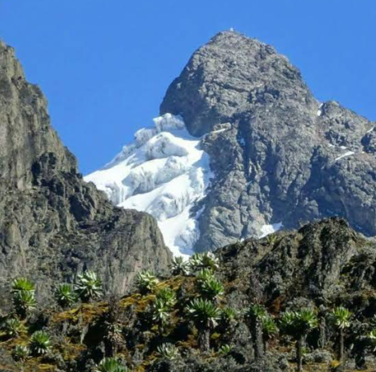

Popular Tourist Destinations
Uganda has many beautiful tourist destinations where visitors can enjoy wildlife, nature, adventure and cultural experiences.
Murchison Falls National Park

Murchison Falls National Park is famous for its spectacular waterfall, wildlife and beautiful landscapes.
Popular activities include game drives, boat cruises and sightseeing.
Queen Elizabeth National Park
 Queen Elizabeth National Park is known for
its diverse wildlife and beautiful scenery.
Queen Elizabeth National Park is known for
its diverse wildlife and beautiful scenery.
Visitors can see elephants, lions, hippos, buffaloes and many other animals.
Bwindi Impenetrable National Park

Bwindi is famous for mountain gorilla trekking and its beautiful tropical forest.
The park is also home to many bird and plant species.
Lake Bunyonyi

Lake Bunyonyi is surrounded by beautiful green hills and small islands.
Visitors can enjoy canoeing, sightseeing and relaxing near the lake.
Rwenzori Mountains

The Rwenzori Mountains offer beautiful scenery and opportunities for hiking and mountain exploration.
The area is known for its impressive landscapes and natural environment.
Kibale National Park

Kibale National Park is well known for chimpanzee tracking and its rich forest environment.
Visitors can also experience different species of birds and other wildlife.
Tourism Activities
| Activity | Destination | Description |
|---|---|---|
| Gorilla Trekking | Bwindi | Experience mountain gorillas in their natural forest environment. |
| Wildlife Safari | Murchison Falls | Explore wildlife through game drives and sightseeing. |
| Boat Cruise | Queen Elizabeth | Enjoy a boat cruise while observing wildlife around the water. |
| Mountain Hiking | Rwenzori Mountains | Explore Uganda's mountain landscapes through hiking and adventure. |
| Chimpanzee Tracking | Kibale | Explore the forest and observe chimpanzees in their natural habitat. |